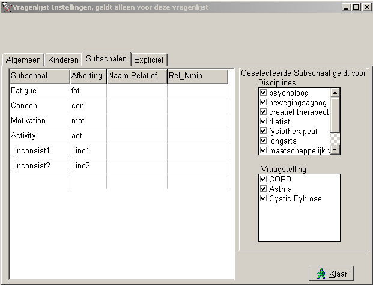
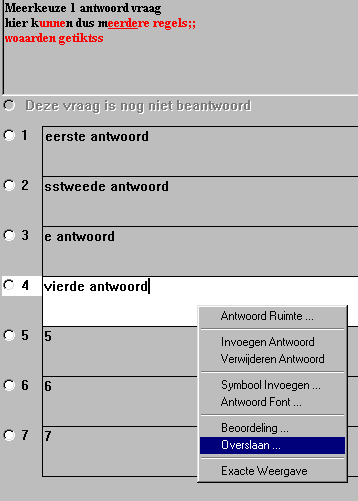
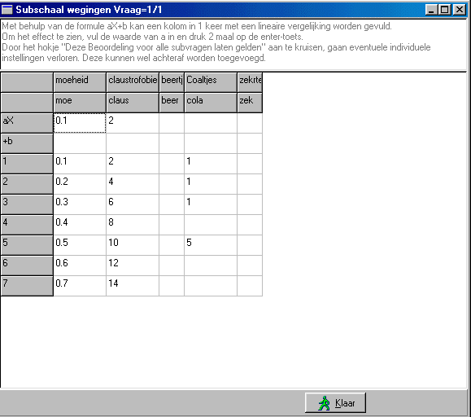

Subschalen
Het gebruik van subschalen en normen vereist achtereenvolgens de volgende acties:
Ga naar de vragenlijst instellingen (toets rechtsboven in de normale toolbox) of rechter-muis-popup op de grote balk.
Kies Subschalen, en het onderstaande invulscherm wordt getoond.
Vul nu de gewenste subschaal namen en bijbehorende afkortingen in.
De lijst zal zich automatisch uitbreiden en is in principe ongelimiteerd.
De normale naam van de subschaal staat in de kolom "Subschaal".
In de kolom "Afkorting" staat de naam zoals deze gebruikt wordt in de (SPSS) export-tabel. Deze afkorting moet aanwezig zijn, en moet uniek zijn, omdat deze ook wordt gebruikt bij de interne opslag van de gegevens.
Indien in de kolom "Naam Relatief" een tekst staat, wordt van de betreffende subschaal ook altijd een relatieve subschaal uitgerekend en afgedrukt in het rapport en geëxporteerd naar SPSS. De relatieve subschaal geeft in gevallen dat niet alle relevante vragen zijn beantwoord toch een resultaat dat af te zetten is tegen de normen. Indien geen tekst in deze kolom is ingevuld, wordt geen relatieve subschaal berekend.
Van iedere subschaal en van iedere relatieve subschaal, kan afzonderlijk worden ingesteld voor welke disciplines en welke vraagstelling deze relevant is. Alleen als hij relevant is voor een bepaalde combinatie van discipline en vraagstelling zal hij in het betreffende rapport worden afgedrukt. Zie voor het definiëren van de disciplines en vraagstellingen: de TestOrganizer / Rapport.
In de SPSS-export worden altijd alle normen en relatieve normen (voorzover natuurlijk gedefiniëerd) worden afgedrukt. Sinds versie 13.0 bestaat de mogelijkheid om de relative subschaal alleen te laten uitrekenen als er voldoende vragen zijn beantwoord. Daartoe kan in onderstaand scherm, in de kolom "Rel_Nmin" het aantal worden ingevuld. Is er niets ingevuld, dan wordt voor de berekening van de relatieve score niet gekeken naar het aantal beantwoorde vragen.
Inconsistancy Check
Een aantal vragenlijsten bevatten meerdere vragen, die een soortgelijk antwoord zouden moeten opleveren (bv. CIS). Aan de hand van deze vragen kan men de consistentie/zorgvuldigheid waarmee de vragenlijst is ingevuld inschatten. De meest voor de hand liggende maat voor consistentie is de Standaard Deviatie (eventueel aangevuld met het aantal waarover de SD is berekend). Met deze methoden is het mogelijk meerdere sets van vragen te groeperen, waarbij iedere groep een onafhankelijke "consistentie-score" oplevert. Bij deze methode is het ook niet van belang, of alle vragen in een groep hetzelfde aantal scores mogelijkheden heeft, door ervoor te zorgen dat de grenzen van de beoordeling voor alle vragen in een groep gelijk zijn.
Als een subschaal als inconsistentie schaal wordt gebruikt (door de volledige naam te laten beginnen met een underscore) wordt in plaats van de som en de relatieve som, het gemiddelde en de standaard deviatie berekend. (mogelijk dat het handig is deze SD te normalizeren ??)

Het is noodzakelijk eerst een antwoord te selecteren in de huidige vraag.
Klik nu met de rechter-muistoets op het geselecteerde antwoord en onderstaand popup menu verschijnt.
Kies hierin BEOORDELING...

Nu verschijnt het onderstaande invulscherm.
De tabel spreekt voor zich.
Gebruik de gewone ENTER-toets om van het ene veld naar het volgende te springen, berekeningen zullen dan automatisch plaatsvinden en u komt in het meest vanzelf-sprekende volgende veld terecht.

Wil men snel een overzicht hebben van alle beoordelingen van een gehele vragenlijst, dan kan dit verkregen worden met het volgende recept:
- beantwoord een vragenlijst
- print de vragenlijst met alle opties (dus inclusief alle subscores en waarderingen)
Voorbeeld:
1/A antwoord = 1 / 2
Subschaal Waardering Grove Motoriek=1 0
Subschaal Waardering Cognitief=0 0 14 15 12 33 0 23424 34 5345 54
In het bovenstaande voorbeeld behoort bij vraag 1/a
De subschaal "Grove Motoriek" krijgt een waardering volgens de formule aX+b, (a=1, b=0, X=antwoord), dus antwoord1=1, antwoord2=2 etc.
De subschaal "Cognitief" krijgt de waardering (begint met "0 0", dus een niet-lineaire reeks), antwoord1=14, antwoord2=15, etc.